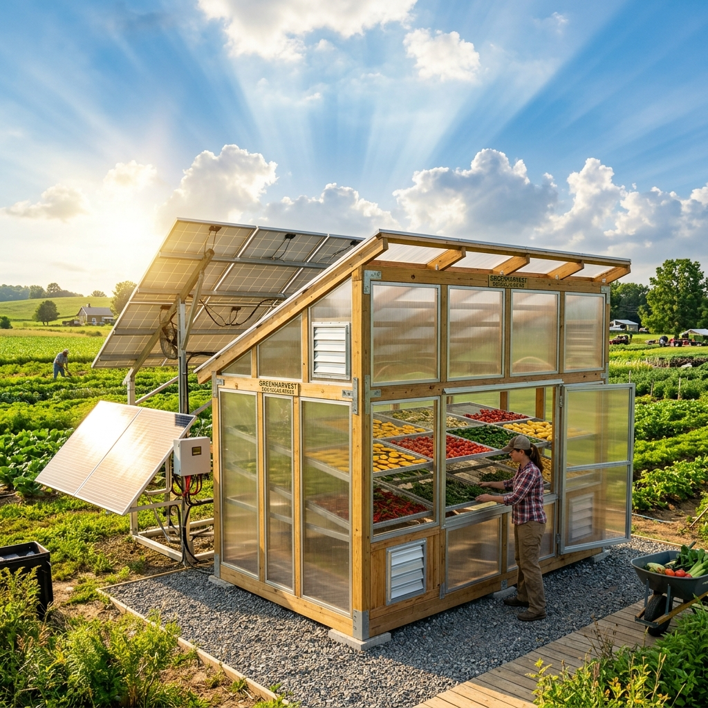
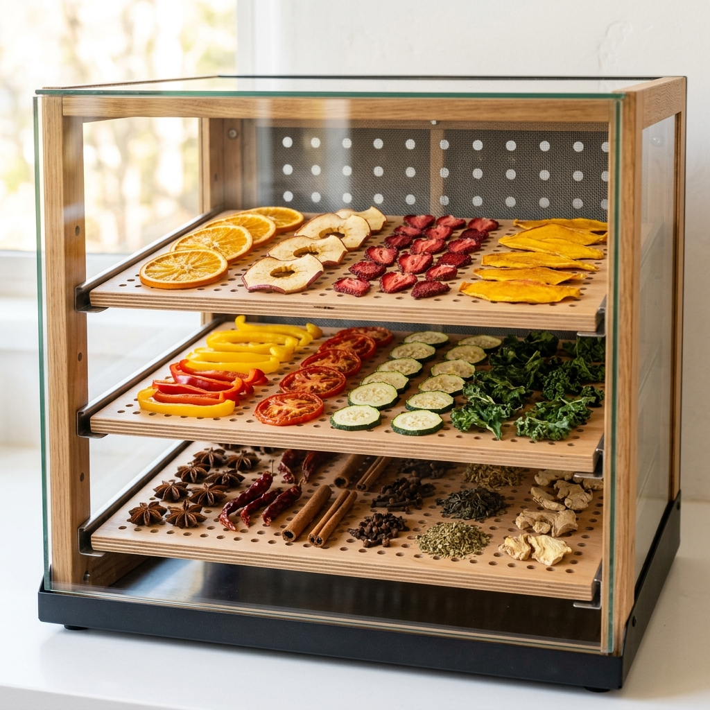
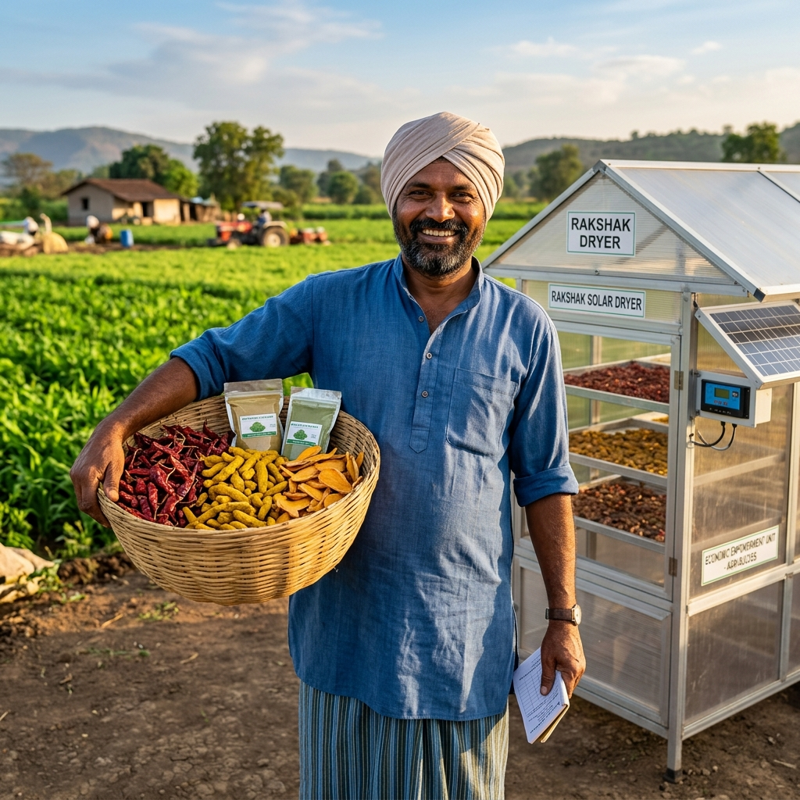
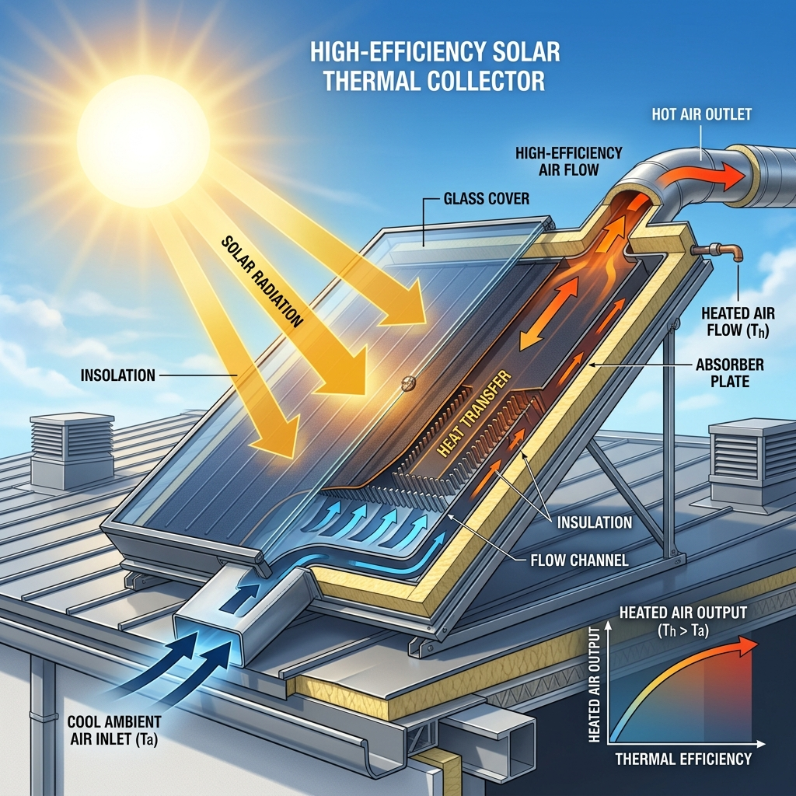
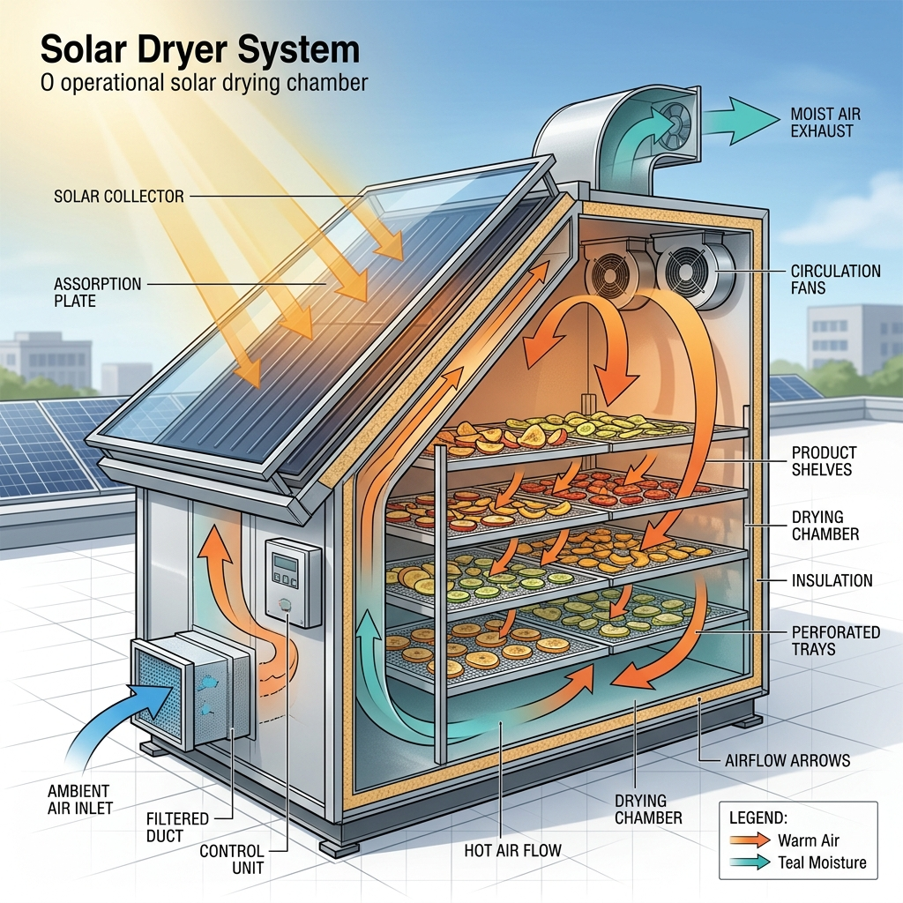
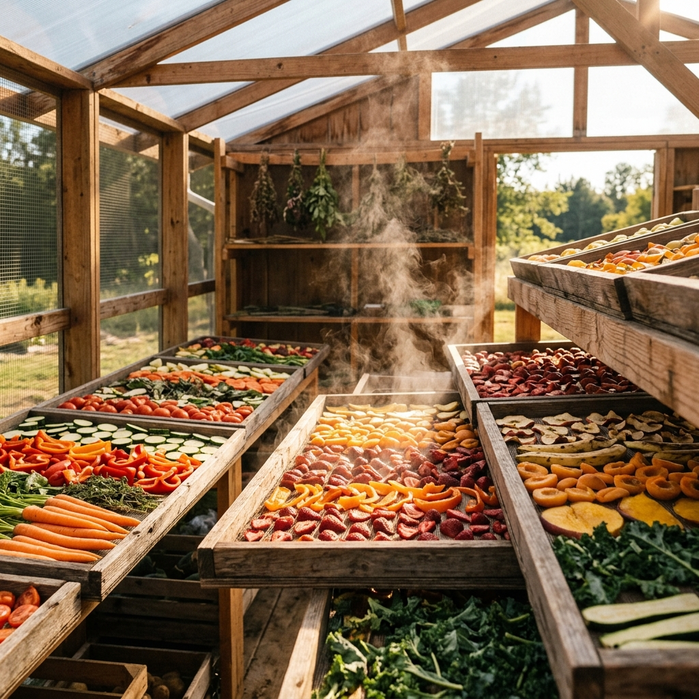

We provide innovative solar drying solutions that reduce post-harvest loss, improve product quality, and increase income for farmers and businesses.
Sustainable innovation that transforms agriculture and empowers communities worldwide.

Harness the power of the sun. Our dryers operate with zero fuel, zero emissions, and a minimal carbon footprint.

Protect your produce. Our enclosed systems prevent contamination from pests, dust, and rain, ensuring hygienic and high-value end products.

Stop wasting fuel and start increasing profit. Reduce spoilage, cut operational costs, and get a fast return on your investment.
Three elegant steps that harness nature's energy to preserve your produce perfectly.

Solar energy is captured by a high-efficiency collector, heating the ambient air to optimal drying temperatures throughout the day.

The hot, dry air is channeled into a sealed drying chamber, either passively or with energy-efficient fans for maximum throughput.

The circulating air removes moisture from the produce, which is then vented out, preserving it naturally while maintaining nutritional value.
From small-scale farms to large industrial processing, we showcase our range of innovative solutions below.

Building Food Security and Reducing Post-Harvest Loss
Our mission goes beyond technology. We aim to empower rural communities, reduce spoilage, and create resilient food systems for a sustainable future.
Partner With Us